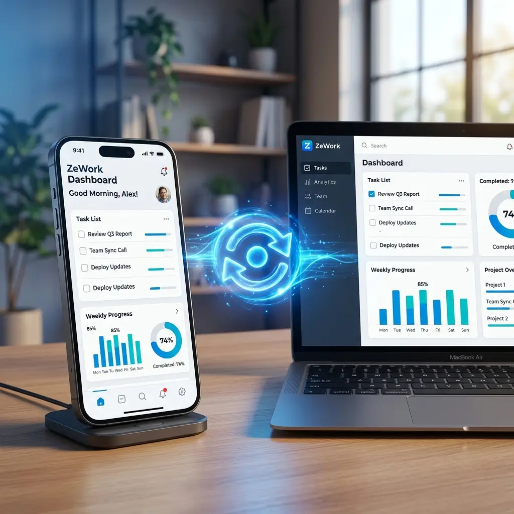
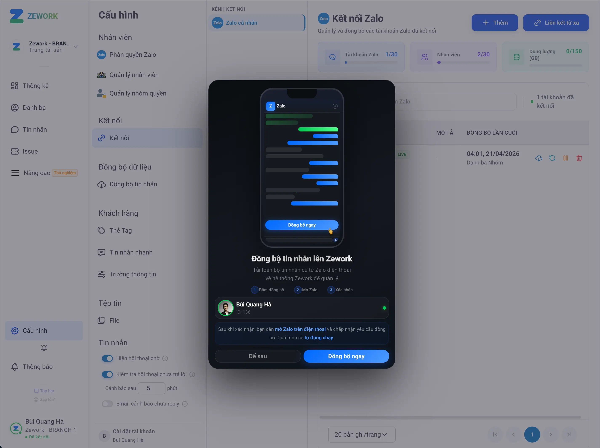
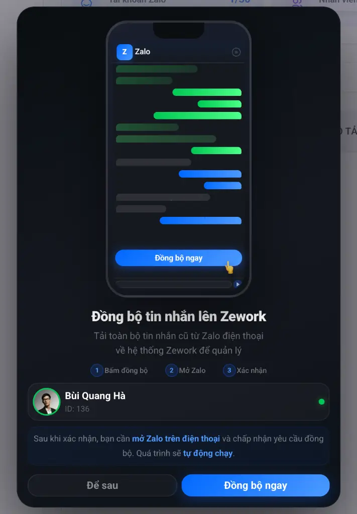

Đồng bộ hóa dữ liệu với Zalo Mobile App
Giải quyết triệt để vấn đề gián đoạn dữ liệu. Toàn bộ tin nhắn cũ từ Zalo sẽ được đồng bộ bởi ZeWork.

Vượt xa giới hạn của các hệ thống trên thị trường
ZeWork giải quyết triệt để vấn đề gián đoạn dữ liệu, đồng bộ hóa tin nhắn tức thì trên mọi thiết bị.

Giải pháp từ ZeWork
Chúng tôi phát triển giao thức riêng cho phép đồng bộ tin nhắn trực tiếp từ app Zalo di động, đảm bảo dữ liệu của bạn luôn liên tục và đầy đủ 100%.

Đồng bộ hóa tin nhắn từ
Zalo Mobile App
Phá bỏ rào cản của các hệ thống cũ, ZeWork đồng bộ hóa mọi cuộc hội thoại từ Zalo Mobile về hệ thống quản lý tập trung tức thì.
Kích hoạt đồng bộ
Nhấn "Đồng bộ hóa" trên hệ thống ZeWork PC.
Xác nhận trên Mobile
Chấp nhận yêu cầu nhận tin nhắn trên app Zalo di động.
Hoàn tất tức thì
Hệ thống tự động đồng bộ hóa toàn bộ lịch sử tin nhắn.